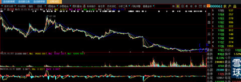
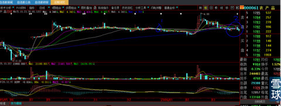
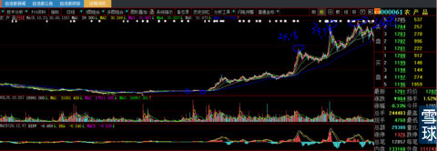
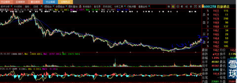
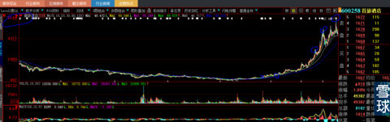

我完整的经历了1999年之后中国A股所有的大牛市与大熊市。其中的2000年直到2005年，没有看过一次股市K线、没有听过一句股市报道、没有翻过一次电视财经频道（至今也没有过）。
2005年期间很偶然的对被股市伤痕累累的一个特别典型的上海本地人王姓男同事随口说了一句（因为他就要离职了，处于同事之情恻隐之心人皆有之，2年后专门回公司探访我）：你就把残存的股票全部无论贵贱现价换仓到“先锋股份”吧（现在叫万通地产600246），后来他告诉我换入价5.8元。我的逻辑是2002年—2005年上海的房地产已经被炒得如火如荼，中午在小吃店午饭，看到成群结队的台湾老太太到处看房后也来吃饭。这时候，股市大盘的低迷必然会被未来主导国民经济的大行业所冲起。买股票就是买行业潜在牛人老大，这个时候先锋股份已经多次公告，冯仑所控万通地产在接手先锋股份大股东位置。
巧的是一天后，跟随我3年的外省籍一女性手下，因为等车的缘故她第一次有机会对我长时间说话，被她为孩子读书跑遍大半个中国颠簸经历与母性伟大精神所感动。几天后深思熟虑的我对她说：把郊区房子卖掉吧（这是我痛悔至今的一件事，虽然2900元每平方卖价是2003年买入的两倍有余，但现在价值280万），得款余额40万现价6元/股买入600246先锋股份锁仓待涨。然后你全心全意努力工作，不要问不要想并千叮万嘱要注意的是：不要告诉任何人你卖房款买了股票，特别是你的丈夫（我对人性太了解，加之她倾诉丈夫从不管孩子上学费用，自己每月工资900元（我听后次月就为她加到1500元））。女性特别容易盲目崇拜，她坚定而完全的执行了。
两年后，股价10送10后涨到45以上（复权价等于90以上），我让她到证券公司卖股票（那时候散户很少电脑买卖，都在证券公司），并很兴奋的计算市值应该在600万元左右。她当众大哭起来，详问之下才知道，买股票后女人的天性就是把财富的幻想炫耀给最亲的人——老公。她老公第二天就跑到证券公司略亏一点卖掉股票背着钱买铜钱（古钱币）去了。
到是那位男同事2007年专门从浦东跑来浦西请我吃饭，人有钱后说话声音就会大许多，正所谓财大气粗，语速与音调与之前判若两人。说到最后不用猜也知道：能不能再介绍好的目标股。
人生啊人生，就是这样富有戏剧性！那女的到今天还在为每月的房贷眉头愁锁，那男的至今还是碌碌无为，平淡的小职员生活注定缠锁终生。
这是我最大的人生领悟：爱一个人让他进股市吧！恨一个人让他进股市吧！普通老百姓注定是：见小利而忘命，遇大利而惜身，概莫能外。
转眼我就进入不惑之年，2005年底，踌躇满志的我筹备资金，下载了5年没有看过的大智慧软件，准备大干一场。虽然当时市场是风声鹤唳草木皆兵，不要怀疑我对大市的判断，不要说2014年8月我所写的帖子，即使11月的帖子您也能窥测到我对证券市场的敏感。
第一个选中的明确庄股对象就是000061农产品，我对自己的技术从来毫不怀疑充满自信。稍加研究就会发现2005年7月15日无量一字板是庄家利用散户怕追高心理故意抬高股价，其实这时候庄家手里根本没有筹码，16日再一字板无数次打开，利用散户熊市思维，短线涨幅太高必然回落技术心理，敞开口袋大肆收集底部带血的筹码。这时已经横盘长达5个月，应该是庄股静默期的尾声，就在2005年12月30日下出了中断5年后的第一次全仓买单4.31元成交（备注：我粉丝中有人2014年11月6日询问过“600058五矿发展”，我也是这样大致给他描述的，并且告诉他600058庄家11月3日故意触涨停不封板，如此才可以放出大成交量，抓一把筹码用作压盘收集便宜筹码，余下一段时间会用时间而不是高度完成坐庄的筹码清洗前期准备，那位粉丝还在吗？）。
下图是当时000061农产品的全景图，圈1处是我买点的进场时间，完全符合我诲人不倦的规则之一：新手第一次进场，尽量选择股价暴跌暴跌再暴跌且半年线、60日线全部拐头向上且周线开始多头排列有大资金明显建仓动作的目标原则，第一仗要确保胜利，开局最重要士气第一，这个开局将导致你今后数年场内的心态。

下图是近景图，圈1是我买入的地方。时过不久股价有所运动，我信心大涨。好景不长，时间过去3个月（2006年3月22日），股价不仅没有上涨，还坐电梯跌回到4.31元，你要知道那是3个月啊！告诉你们一个刻骨铭心的经验，每一根K线就是1天，70根K线就是长达90多个自然日满怀希望的等待，所有复盘看客，今天看见的只是图形大小与K线如何组合，有几人能体会坐在电脑后面的人在慢慢长夜里，从妄自尊大的豪情到苦思冥想的自我怀疑、进而信心崩溃的自我否定？你打开那时候600030中信证券2005年12月至3月的K线图，股价都是快速翻番并且又开始猛涨，你设身处地的想一想：满盘翻倍的股票战场让一个自认武功高强的战士如何坐得住？就像今天的新黄浦，面对满盘活蹦乱跳的涨停股你还有任何信心没有？更不用说股价就像没有任何支撑，K线所描述的空头是那么直白。自我否定后，第二天义无反顾的斩仓出局（下图2处）。
噩梦就从这天开始，开局不利的后果将影响很久很久。

下图是后2年的结果，股价1年后24.18元，再半年34.99元再半年36.88元。即使第一年股价也是我买入价格的5.6倍，那是多么大的一笔种子资金啦！至今我都不能原谅自己。

接下来又开始了新的憧憬之旅。
2006年3月17日600258首旅股份（现在叫首旅酒店）停牌，4月4日开盘，深谙“心形”之道的我，义无反顾的在4月5日（下图1处）满仓8.6元买入（我总是全仓狙击庄股），。

又过4个月，你不能说我不能捂股吧？到了7月12日，精于短线技术的我，感觉股价要下跌，妄想玩T一下全仓卖出，股价第二天到是真下跌了，可总觉得会再下一点，再后来股价走到我卖价之上，我们将心比心哪里还有心情再买回？总觉得加价买回吃了亏。轰轰烈烈的大牛市前后过去了7个月，你们已经看到我狗屁都没有捞着。
下图正好一年后股价涨到第一次高度52元，再过3个月涨到62元，是我买入价的7.2倍。

我的心更加焦虑（现在想想有什么焦虑呢？不就是看到人家赚大钱自己没有抢到么？可那时候就是感觉别人抢的就是我的钱，本该属于我的钱啊）！正在这个时候，证监会开始金融创新试点：权证创设。痛恨之下，凭着技术在当年的权证创设炒作过程中，很快赚钱快到自己都是糊涂的，借用民生银行董事长的话：赚钱到自己都不好意思，说实话，那时候股票涨停板看着就瞧不起他们，权证上午冲高15%出局到中午跌到-20%再进入上下将近40%，再到收回，一天赚25%会被人嘲笑死。没有经历过那段醉生梦死日子的人怎么可能了解参与者疯狂而烦躁的心！
sunny8988@炒的是心:心大，2015年2月1日心理我将回国，13个小时的飞行正好可以静下心一次过看完您全部的帖子
我从07年开始刻苦地钻研股票技术，经历过一个完整的牛熊后，深深体会到炒股就是“炒的是心”，直到8年后的最近才开始有所斩获。
2013年开始，我发觉自己在股市赚不到钱的主要原因不是选不到好股，而是潜伏得太早，而又经不住庄家的恐吓。最终总是守不住，通常都是割肉出局，回头再看股价总是在我出局之后才飙上天。
潜伏太早的原因是：不懂得你总结的“主升浪往往都是在股价相对高位才展开”+恐高症+主升浪阶段技术诀窍+心理素质不过关。明白这些后，我选择抄底+耐心安静地潜伏，庄家制造恐怖时我就问自己：当初选这只股票的依据如今有无变化？2013年底18块左右买进的600705中航资本，持仓到2014年8月前停牌，复牌后卖掉了大部分。2014年4、5月之间8元多买入“农发种业”守到现在。准备在到达您教的目标价计算方法时出清。2014年是我操作最少的一年，但是收益却是最稳定、也是最大的一年。
我读过众多股市技术分析书籍，其中有三年，每天收市后对全部股票的K线图复盘一遍，并做大盘和个股的分析笔记，加上自己这七八年来在股市跌宕起伏中的心路历程，已经能够大致判断市场的趋势了。但总觉得还有什么东西卡住，没能融会贯通。自从发现您的帖子后，字里行间所教的技术细节和心理活动，给我这种有多年炒股经验自认很有悟性的人也是一种“醍醐灌顶”的震撼，感觉自己一下子被您打通了所有关节。你想象不出来，看到你的帖子时，我内心的那种狂喜。尽管现实生活中，我已经是很从容淡定的一个人了。
我想您帖子里的很多深意，那些粉丝新人其实根本不可能体会得到。比如你在《牛市的教训与忠告之一》里最后一段说：“我的心更加焦虑，现在回想有什么可焦虑的呢？不就是看到人家赚大钱自己没有抢到么？可那时候感觉别人抢的就是我的钱，本该属于我的钱啊”！看到这段，我忍不住会心大笑：是咯，财不进急门，人急了心就燥了，就容易像您说的：“被猪油蒙心，纵然有再好的技术都白搭了”。这一句，是那个帖子里的精华之一。
等消化好您的教诲，相信我能更上一大层楼，然后把这些年被市场掠夺的财富，加倍的拿回来！
今天话有点多，请见谅。实在是太受益了，很感激。